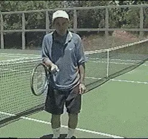
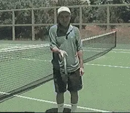
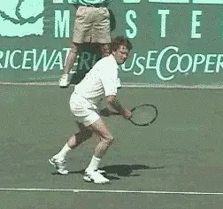
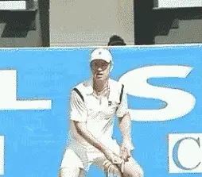
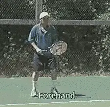

Forehand Made Easy¶
By Allen Fox¶
One question comes up quite a bit when I talk to club players and that is, is there a right way to hit a particular stroke and a wrong way? Or is any way that feels good to a person really the way he/she should hit it?

\ Stepping in adds three to five miles an hour racquethead velocity without sacrificing control. Notice the racquethead remains steady.Because when you look at the pro circuit, you see many of the top players hitting the ball in very different ways. Is there a reason why the average player should copy one particular pro player or another? If a top player is successful using complicated biomechanics, does that mean club players should try the same things?
The answer, as far as I'm concerned, is that the easiest way is usually the best. If you've got a great athlete who practiced five or six hours a day for 10 or 15 years, he might be better hitting a ball in a more complex way than you or I could doing it the easy way. But that doesn't mean that it wouldn't have been better for him to do it the easy way as well.
So, the forehand I'm going to demonstrate is in my opinion, the easiest way to hit the ball.
You've got two goals in hitting a groundstroke. One is to generate power, which you could equate with the racquet head velocity. The second is to maintain control. You've got to control the trajectory and the angle of the racquet head during the swing.

\ Rotating the body is another source of stable power. Again, the racquet head remains in a fixed position.To begin with, tennis is a very difficult sport relative to most racquet sports. This is because the ball has to travel a long distance, 70 feet from baseline to baseline. The racquets are relatively long compared to ping pong or racquetball and so if the contact is off by a quarter of an inch, by the time the ball gets across the net to the other side, it's going to be off by half a dozen feet.
So, the racquet face has to be very precise, yet you have to get it moving quite fast. What I'm going to show you is the simplest way to get racquet head speed with more exactness and less variability.
Power¶
There are essentially four components of power. The first two are fairly easy to control. You want to use those as much as you can. The second two are much more difficult to control.
The first source of power that can make your racquet move is your legs. Hold the racquet steady and step in. Notice the racquet's moving. That's giving you power.

\ Connors had one of the simplest forehands in the game. All body rotation and step in with very little arm and wrist movement.Set the face of the racquet and without swinging, step forward into the ball. You won't hit it very hard, however, because the head remains in a fixed position, you would hit it very consistently. The ball would always come off the racquet in the same way depending on how you set the face. And that's the reason you step into the ball - you essentially get a free three to five miles an hour of racquet head velocity without sacrificing any control.
The second way you can get power is by rotating your hips and torso. Set the racquet head in the contact position again and rotate the hips and torso while holding everything else still. Notice that you have created another stable power source. The reason it's stable is because the racquet head stays in the same position while the hips and torso are rotated, making it easy to control.
The third way you get power is by moving the arm relative to the body. [But here is where the problem begins. [I'm now using my arm muscles to control the angle of the face of the racquet head as I swing and it may become unstable.]] And remember, it only has to be off a quarter of an inch for you to lose control of the shot.

\ McEnroe's used his body to turn the racquet, the arm was sort of a passive element.The final power source is the wrist. [And again, this is not a terribly stable source, either.] It wiggles. If the racquet is a little open or a little closed, you'll make a mistake.
The bottom line of all of this is that the best strokes are hit using mostly body rotation and leg drive forward for power and less arm. [Top pros use their wrists for flexibility], but it's something that you have to play for many, many years and be awfully good at to use.
Jimmy Connors probably executed this best - he just rotated and stepped. It was quite cramped at the shoulder. His arm didn't move around very much. And John McEnroe, as different as his game looked from Jimmy Connors, hit the forehand very much the same.
The end result is a stroke that is very compact and simple. You turn your shoulders, you're going to hit in that direction, your back is actually away from the direction you're going to hit. Then you step in and rotate. So the racquet's back, shoulders turn, step in and rotate.
The arms should be relatively relaxed when you hit, they are moved by the shoulders. The stroke starts when you rotate the shoulders and step forward.
Click Photo to see Allen Fox talk about the height of the backswing.
A final question, when do you take the racquet back and how high? You take the racquet back by the time the ball hits the court on your side. Whether it's high or low doesn't really matter terribly as long as the shoulders are turned and the racquet's as far back as it's going to go. When the ball hits the court, you rotate and step.
So why do the pros often use a high take-back? That is because most pros use a circular motion, taking the racquet back high then dropping it down and through the stroke. The reason they do that is to gain more power in the same way a softball pitcher takes a full round wind up so they can accelerate more.

\ The Forehand is motored by the rotation of the shoulders and throwing the weight forward with the legs. The arm does very little.You may get more acceleration with a higher take- back but the trouble is, it makes it much more difficult to control the ball.
You have to get your racquet to the contact point at exactly the same microsecond that the ball reaches that point. You're judging the ball's trajectory as it approaches, and your racquet is going to have to match it perfectly.
The longer your stroke, the earlier you have to determine exactly what microsecond the ball's going to be at that spot, and the harder it is to control the stroke.
So, a judgment call, based on your ability, as to how far you take the racquet back or how high. Develop a backswing that allows you to have consistent timing.
Approach the ball with your shoulders turned toward the net, then rotate and drive your weight into the ball. [Notice the body weight going forward and the shoulders rotating heavily.] [The racquet goes back early, it's waiting. The shoulders are turned by the time the ball hits the court, then there's a rotation forward and a leg drive forward.] [The arm's relaxed, the shoulders turned, the arm's thrown forward by the shoulders and the legs and the weight goes forward nicely into the ball.] [This way, you can generate a lot of power without much effort.] Of course, if you'd rather make your life more complex by imitating the Spanish players or Gustavo Kuerten, that's up to you.

Winning the Mental Match Dr. Allen Fox
Tennis is mentally the most difficult sport due to it's personal nature which makes winning and losing feel more
important than they are. In this new book, Allen offers his proven solutions to problems such as choking, reducing
stress, finishing matches, and developing confidence. Based on a life time of high level play and coaching success,
it's a must for all competitive players.
[ to
Order](http://www.amazon.com/Tennis-Winning-Mental-Allen-Fox/dp/0615407765/ref=sr_1_1?ie=UTF8&qid=1336083459&sr=8-1).
Winning may not be everything, but Dr. Allen Fox points out
eminently preferable to losing. In his new book, The
Winner's Mind, Allen lays out an original step-by-step
plan for succeeding at any of life's endeavors, based on
his first hand and very personal observations of the
careers of both world-class tennis players and successful
businessman. The bottom line is that even if you are not a
born champion--and only a tiny percentage of us are--you
can still use the success strategies of champions to tilt
the odds in your favor. Writing with brutal honesty and dry
humor, Fox lays out the common mental characteristics of
winners in sports and in life. He explains the critical
role of intellect over emotion. He analyzes the struggle
between ambition and fear and the insidious and pervasive
fear of failure that undermines so many of us. He then
outline how to confront and overcome these fears in your
life and career, even when they are initially subconscious.
Must reading from one of the great thinkers in tennis, and
a Renaissance Man in life. [ to
Order](http://www.tennis-warehouse.com/descpage-MIND.html).
To purchase this book you can also send a check for $17.95
to Allen Fox, 1120 Inverness Place, San Luis Obispo, CA.
- The price includes shipping.

Allen Fox PhD is a former world class player, a coach,
insightful analysts in modern tennis. A top 10
American player from the glory days before Open
tennis, Fox played many of the legendary greats, among
them Roy Emerson, Rod Laver, Stan Smith, and Arthur
Ashe. At Pepperdine he developed the men's tennis
program into an elite contender for national titles,
and gave Brad Gilbert the insights that became the
foundation for "Winning Ugly". His book Think to Win
is a modern classic. He has also starred in a series
of acclaimed videos, including Pro Secrets of Match
Play and Allen Fox's Ultimate Tennis Lesson.